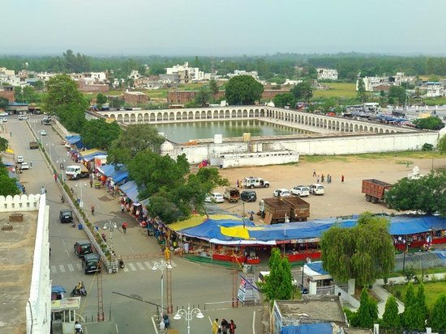
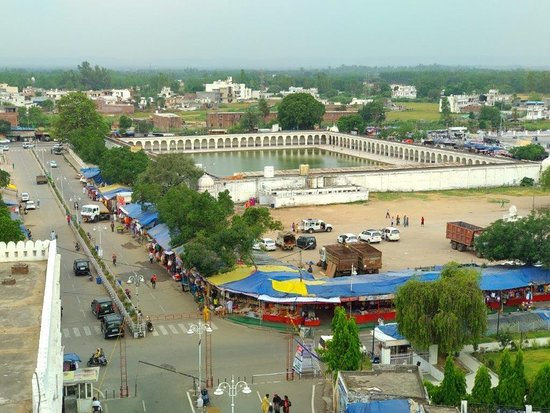
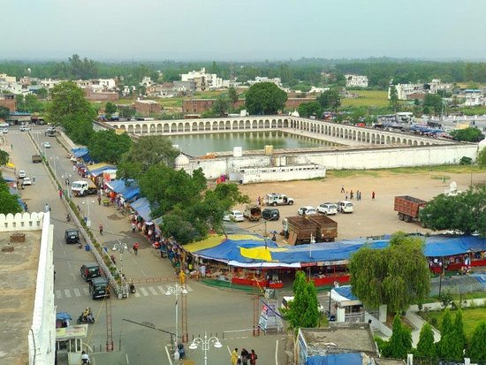
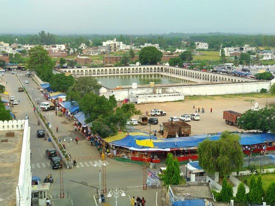

Chennai, formerly known as Madras, is th
e capital of Tamil Nadu and is located on the Coromandel Coast of the Bay of Bengal. This vibrant city is renowned for its rich cultural heritage, diverse population, and dynamic lifestyle. Chennai is often referred to as the "Gateway to the South" and is home to numerous historical landmarks, including the famous Marina Beach and the historic Fort St. George. The city is also a hub for the Tamil film industry, known as Kollywood, and has a thriving IT sector, contributing significantly to India's economy. Chennai's blend of traditional Tamil culture and modern urban development makes it a unique and inviting destination for visitors from around the
Chennai, formerly known as Madras, is the capital of Tamil Nadu and is located on the Coromandel Coast of the Bay of Bengal. This vibrant city is renowned for its rich cultural heritage, diverse population, and dynamic lifestyle. Chennai is often referred to as the "Gateway to the South" and is home to numerous historical landmarks, including the famous Marina Beach and the historic Fort St. George. The city is also a hub for the Tamil film industry, known as Kollywood, and has a thriving IT sector, contributing significantly to India's economy. Chennai's blend of traditional Tamil culture and modern urban development makes it a unique and inviting destination for visitors from around the world.